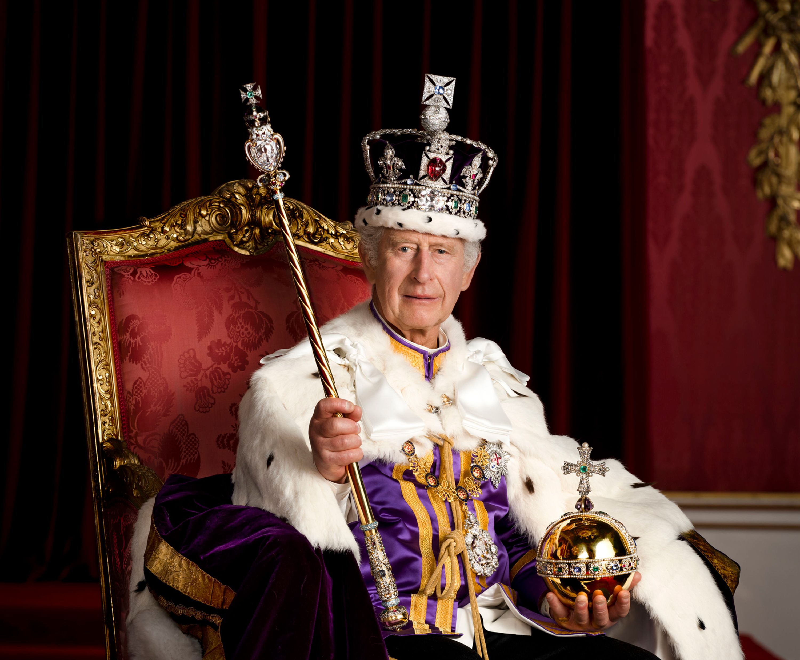

The American System and The UK System
the american constitution
The Constitution of the United States began to function in 1789, and it is the world’s oldest written constitution in force.
Even with just 27 amendments, it now serves the needs of over 250 million people in 50 diverse states.
Principles of government:
- respect of the Constitution and the rule of law
- federalism
- separation of powers
In the United States there is a presidential federal republic.
In a Federal system, a state government has autonomous powers that are stipulated in the Constitution and has primary functions of providing:
- law and order
- public welfare
- education
- other things concerning day-to-day life
Furthermore, the head of the executive at the state level is the Governor, who has the same powers as the President.
the powers in the usa
- legislative power: Congress (Senate and House of Representatives)
- executive power: President
- judiciary power: Supreme Court and Inferior Courts
congress
The Congress is divided in two chambers, that both meet in the Capitol Building in Washington. They also have the power to introduce legislation on any subject with certain limitations, but revenue bills must originate in the House of Representatives.
senate
Senators must be at least 30 years old, citizens of the USA for at least 9 years and residents of the states which send them to Congress.
The senatorial term in 6 years, and every 2 years one-third of the Senate changes.
Exclusive powers:
- confirm presidential appointments of high officials and ambassadors
- ratify all treaties
- try impeachment of federal officials including the President (it has the task to conduct trial and act as a jury)
house of Representatives
The deputates must be at least 25 years old and citizens of the USA for at least 7 years. They also serve a two-year term (midterm elections).
The total number of members is 435, and they are in proportion to the population in each state.
Functions:
- introduce legislation on any subject
- bring charges of misconduct that can lead to an impeachment trial
the president
The President must be a native-born American citizen, be at least 35 years old with at least 14 years of residence in the USA.
Presidential powers:
- executive branch of the federal government
- legislative powers: can veto any bill passed by Congress and influence the course of legislation
- judicial powers: appoint federal judges and grant a full or conditional pardon
- executive powers: manage national affairs (foreign policy, like the army and the relations with other nations together with the Secretary of State)
us elections
In the USA people do not vote directly for the President of the USA but, in each State they vote a list of candidates (the Great Electors) that, in turn, will vote for the President of the US. The Great Electors must be the same number of the Senators (2 from each State), and the members of The House of Representative (proportional to the number of inhabitants of that State). The Electors belong, of course, to a political party.
In each state they use a voting system called "The winner takes it all”, which means that the party with the majority of votes wins all the Great Electors of that State.
After the Great Electors will vote for the President of the USA. Their number is 538, there are three more Electors from Washington Dc, that on that occasion becomes the 51st State.
Ex: in one State there are 10 candidates, six are democrats and four are republicans. In that State all the ten Great Electors will be of the democratic party. This happens in each State.
- Primaries: Democrats and Conservatives choose the candidate for presidential elections (competitors inside the same party)
⤷ President Ticket: President and Vice President
- Party Convention(August): meeting where they discuss and publish their programs
- people vote for the Great Electors in November
- Electoral College
- 20th January: the 4-year presidential term begins (oath of office)
On the occasion of the elections, we saw a conference organized by the foundation Corriere della Sera: "L'america al voto".
The UK System
In the United Kingdom there is a parliamentary monarchy (or parliamentary constitutional monarchy). In fact, after the Glorious Revolution, full sovereignty was placed in the hands of the King (or Queen) in Parliament, and now the monarchy just represents the unity of the country.
Currently, the king is Charles III.
Powers of monarchy:
- the King summons, prorogues and dissolves the Parliament
- he opens the new parliament session with a speech from the throne (prepared on the advice of the Prime Minister)
- He appoints the Prime Minister (formal)
The Constitution in the UK
The UK doesn’t have a written constitution set out in a single document, it is composed by:
- common laws (body of laws that looks to the past sentences)
- statute laws (laws approved by the Parliament)
- conventions
Most of the laws can be altered by an Act of the Parliament or by general agreement to alter a convention.
The most important documents are:
- Magna Carta
- The Bill of Rights
- Reform Acts
- The Human Rights Act
Furthermore, although the new governments have some legislative and other powers, they don’t have the same power of the UK Parliament. In fact, they have no constitutional right to exist and can have their powers broadened, narrowed or changed by an Act of the Parliament.
the powers in the uk
- legislative power: Parliament
- executive power: Prime Minister and the Cabinet
- judiciary power: law courts
parliament
The Parliament is divided in two chambers, the House of Commons and the House of Lords. Parliament usually refers to the House of Commons, that is made up of elected Members of Parliament (MPs); meanwhile, the House of Lords has almost no powers and it is formed by non-elected members.
house of commons
In the House of Commons there are 650 MPs each representing a constituency and it is presided over by the Speaker.
house of lords
It hasn’t a fixed number of members that are divided in “Lords spirirual” (from the Anglican Church) and “Lords Temporal” (hereditary Peers or Peeresses, or appointed by the monarch).
Prime minister and the cabinet
The Prime Minister is the leader of the ruling party and sits in the House of Commons. He/She is chosen by the party members, but officially appointed by the Monarch.
The powers are to select, appoint and dismiss the senior ministers of the Cabinet that he/she leads.
The Cabinet is a committee of 20 senior government ministries. Roles:
- make major policy decisions
- decide which proposed laws will go before Parliament for debate and when
- coordinate the work of government departments and settle policy differences between them
electoral system in the uk
The right of vote is universal and people can vote at 18 years old. Voting is by uninominal suffrage and it’s not compulsory, so the people who can’t vote in their constituency can send their vote by post.
In the UK there is the First Past The Post System, which means that in each constituency the candidate who receives most votes is elected, often with less than half of the votes cast, and they have a five-year term.